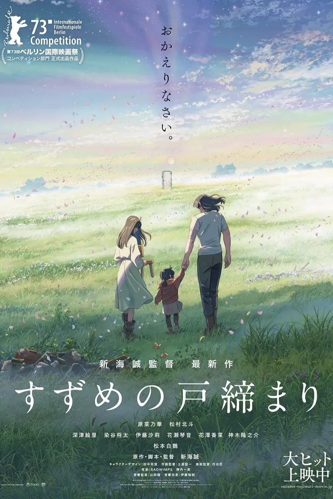

本文是与好友，讨论整理而成的文字。**可能有剧透，**但想必本文的读者大多已经看过《铃芽之旅》，我就不吝啬吐槽了。
文 / @Yuay

新海诚与灾难悼念
提到新海诚的作品，大家首先会想到的是《你的名字》？亦或是是《天气之子》？或者说《星之声》？这些作品无一都与世界系这个词有关联。那么在我聊《铃芽之旅》之前，我想先说说什么是“世界系”，世界系是二次元作品中的一种故事类型，没有非常具体的定义，简单的说世界系就是将通过少年少女的感情和世界危机联系起来。在新海诚的*“后311”灾难三部曲*中世界系这个词始终贯穿着剧情，这一点《天气之子》上尤为明显。
新海诚想做一部「悼念」与「衰退」的作品，「悼念」那些因为失修与搬迁，逐渐「衰退」的地方。
所以与《天气之子》的侧击不同，这一次，新海诚打算直面灾难与衰退。
作为经历了日本311大地震与海啸的导演，对于灾难类的世界系这个主题似乎有特别的理解。
“311的十天后，我注意到东京的樱花开了。”
他在《梦》中采访时说，311之前的日子，他发现天空变得异常美丽，就觉得哪里不对劲。而在新海诚后续的灾难故事里，天空的确总是异常美丽。相较于灾难的惨烈景象本身，新海诚的眼里更多是美丽闪亮的东西。
“どんな苦しみにぶつかったとしても、未来は光に満ちている（不管遇到什么痛苦 未来总是光明的 ）”
他就像一个小男孩一样，在世界的动荡中，看到灾难发生时只会长大嘴巴惊叹：真糟糕。灾难三部曲中灾难的部分一直很拉，就因为他还是个始终盯着闪亮东西小男孩。他看到的似乎都是生活中虚无缥缈的碎光，对于灾难中的的「悼念」与「衰退」他也只能像一个小男孩看绘本一样，也许他看得明白绘本的故事，但故事中的内涵与道理我想他还需要仔细思考。
所以这也让新海诚的《铃芽之旅》遇到了一个很大的难题：他的细腻美好，确实不太适合作为「衰退」与「悼念」的符号。
新海诚与类型逻辑
《铃芽之旅》似乎比前两作还要更接近一部纯粹的商业娱乐动画：动画中罕见的宽银幕画幅；演出层面对实拍式电影场景模仿的精良制作；比之前风格更加“宏伟”的配乐…正因为如此，本片在故事的表现方式遵循类型逻辑而展开。但是，作为类型逻辑片它也并不优秀。
正如片名《铃芽之旅》，这是一部关于旅途的电影，新海诚似乎也行利用旅途的风景来「悼念」「衰退」。正因如此，与一般的悠闲自在的公路片不同，本片叙事的牵引力十分单一、强烈：为了防止灾难，主人公必须前往日本各地关上一扇扇“往门”。
紧凑的节奏加上新海诚描述的无比美丽的画面，这似乎让影片就像一部“游客片”。但也就同步履匆匆的游客一样，忽略了很多好的东西，让人难以感受到新鲜感。影片只用短短一个十多分钟的序幕，就完成了一次“闭门”的高潮演出，而这十多分钟就展现了这个旅途中前半段的绝大半部分东西；与之相比，《你的名字》与《天气之子》在前文就给予大量的铺垫，在偏后位置给出的沉重一击给我的感受要深得多。
正是如此，在类型的既定轨道中，本片整个前半段就在不断地演绎开头的片段。虽然地点在不断变换，规模也越来越大，但所表现的内核似乎都是相同的。虽然在演出中精心设置了不少的变奏，但是在东京的高潮部分，所表现出来的震撼感还是被前面重复的关门消解了不少。
因为类型化的展现，高潮与高潮的之间憩息的桥段一般是温馨且有趣的，本片也如此。我们跟随主人公遇见了一些角色，也看到了很多有趣的桥段，其中不乏致敬以前的元素——对猫猫喜爱，美食的展现（虽然只有吃饭的片段）…但是在类型化段落对篇幅的挤压下，留给人物的情感发展空间就自然不多了；更糟糕的是，男主在开头不久之后就变成了一把椅子，他的身份更像是影片中承担逗趣效果的宠物…这样一来，就让本作的男主角显得如此苍白无力，甚至不如铃芽小姐一路遇到的善良路人。
在一般的公路片似乎没什么问题，爱情似乎只是一剂调味剂；但是在新海诚式的爱情故事中，爱情可谓是剧情的核心动力，它至少要强大到足以支撑后半段剧情的发展和转变，就像《君名》与《天气之子》展现的一样。但最终只是重蹈了同为女性主角公路题材的《追逐繁星的孩子》中无效煽情的覆辙。
就这样，这些三条腿两边倒，抽根烟当陪笑的男人，仿佛商业化的调味添加剂，在商业化加工下，让我吃出了廉价糖精的味道。
新海诚与和解叙事
同样身处一个“后灾难”的世界，《天气之子》中，推进的动力是**“爱”**，结局表面看是一个有轨电车伦理难题，也就是在命运的洪流面前，少年和少女需要做出选择：小爱还是大爱，个人还是社会？
但在这道命运相关的难题中，新海诚选择了另一个角度进行“和解”：*“许多年前东京就是这样的一片海湾，你不要想太多，这只是它回归了自己应有的样子而已。”*它承认世界的撕裂已经不可挽回，但仍要在失常的世界中继续生存下去。
但《铃芽之旅》的“和解”却不一样，一切撕裂都可以被和解所拯救，一切失落的记忆都可被赎回，一切伤痛都能以一种幻想的方式得到“治愈”。推进的动力从“爱”变成了这种“和解“，驱动着整个影片后半段的拯救之旅：铃芽与大臣变得瘦小，并肩踏入往门时，和解发生了；之前争吵的姨妈骑自行车载着铃芽和猫咪们寻找往门，和解发生了；当铃芽在常世中遇到小时候的自己时，整个拯救之旅的隐喻也在此刻被揭露为铃芽对自己的拯救——与童年的创伤性记忆完成和解。不仅如此，铃芽此前途径的每一个地点都对应着日本历史上的一次震灾，而每一次关门都是一次和解、一次对灾难记忆的赎回。
但这样的和解与《天气之子》不同，《天气之子》的和解是一种释怀，透过乌云射入的些许阳光，它为主人公的爱与世界的命运做出了解放。而《铃芽之旅》非但没有通向对自我的解放，反而让每个人物都更加心甘情愿地陷入原有的秩序的束缚之中，落入无可救药的幻想之中。与其说是和解，不如说是一种束缚。
新海诚与不知所云
由于和解作为贯穿全剧的核心动力，我就更难以理解新海诚用girl meets boy贯穿了整个剧本的这个角度了。这样的爱情的用意是什么呢，在我看来，新海诚并没有好好表示出来。
我认为最早2020年的新海诚是不想再做boy meets girl了，就像《你的名字》本来不是Good End再遇的结局，《铃芽之旅》的女主铃芽与她的阿姨岩户环，应该是这部公路动画的双女主。
本作的主旋律让我摸不着头脑，理不清头绪，在《铃芽之旅》里，我们看到日本各地的景色，听到角色们感叹「衰退」「遗忘」「失去」的故事，却听不到新海诚说了些什么。
他想悼念的是什么？是对灾难记忆的赎回，还是告诉人们只要和解事情就会变好的？我觉得他可能自己的脑海中也只有一个模糊的答案，至少从这一部电影中看来是这样的。
小结
同样是和解，《铃芽之旅》让我感受不到对灾难悼念的深沉与向前的动力。反而《天气之子》的回应更有力量、也更具现实意义：对幻想的弃绝、对现实生存的直面，以及对爱的一点微小但坚定的实践。（ps.在这个方面，《天气之子》真的是新海诚最被低估的作品，也可能是新海诚唯一的杰作。）
我感觉《铃芽之旅》本来可以有很多有趣方向（类型逻辑、和解叙事、灾难悼念），但最后决定在所有方向上浅尝则止。而且各个方面都让人觉得食之无味弃之可惜，它们之间甚至充满了矛盾与冲突：类型逻辑与情感描写的冲突；和解叙事与主题的冲突；甚至连大众喜爱的背景画风，也与灾难悼念的相冲突….
我不知道这里发生了什么，我只相信，这不是新海诚自己本来想踏上的旅程。
我不相信新海诚没有话要说，也不相信新海诚能说的只是「你要活下去，事情会变好的」。
评分：2.5 / 5分